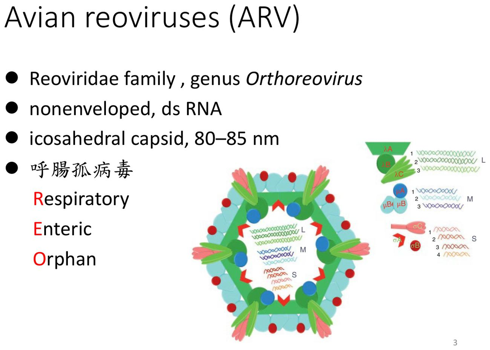
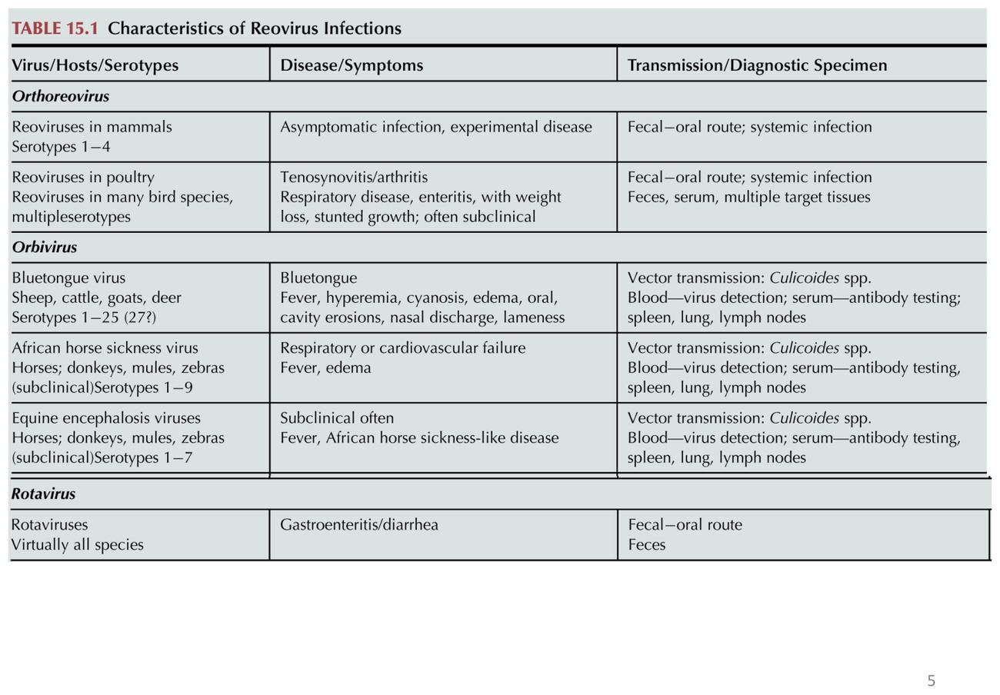
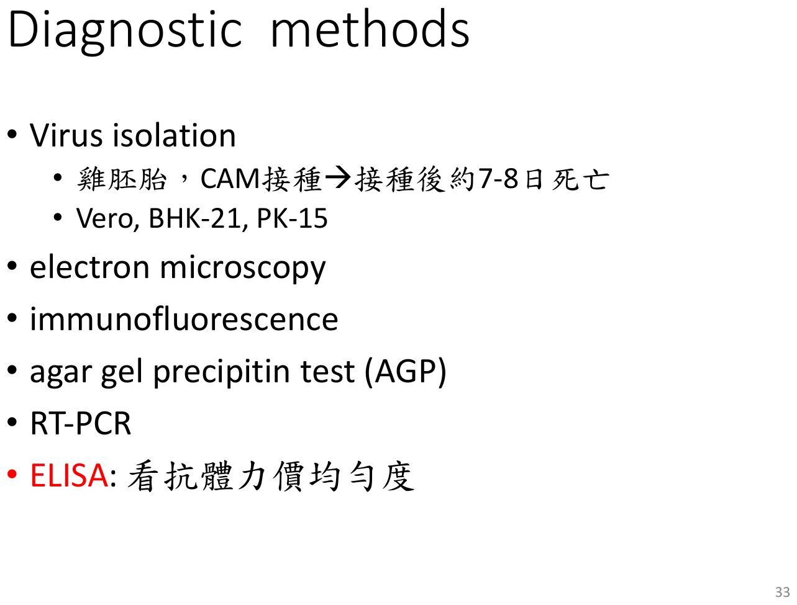

大方向與重點摘要
- 這是什麼病
- 由禽呼腸孤病毒（Avian Reovirus, ARV；台灣常稱「里奧病毒」）引起。病毒普遍存在商業家禽（尤其肉雞）的消化道，多數感染沒有症狀；病原株會侵犯肌腱，在肉雞與火雞造成病毒性關節炎／腱鞘炎（viral arthritis／tenosynovitis），也和矮小症候群（stunting syndrome）有關。
- 為什麼重要
- 發生率可達 100%，但死亡率低（約 5%）；損失來自體重減輕、換肉率差、適銷性降低。病毒耐熱、耐酸，又會從消化道長期排毒，雞場不易清除。常與黴漿菌（Mycoplasma synoviae）、葡萄球菌混合感染，也和球蟲、IBD 共同感染。
- 這章要抓的重點
-
- 病毒：Reoviridae、Orthoreovirus；無封套、dsRNA、80–85 nm；名稱來自 Respiratory、Enteric、Orphan；耐熱（60°C 8–10 小時）、耐 pH 3。
- 宿主與年齡：雞、火雞；1 日齡最敏感，自然感染多在 4–7 週齡，10 週齡以上不敏感。
- 傳播：水平（糞便 → 口、呼吸道 → 消化道）為主，垂直（介蛋）非常少；接種途徑決定潛伏期（趾蹠 1 天最短）。
- 臨床：跛行、發育不良、羽毛生長不良，通常 4–5 週齡出現；產蛋下降 10%。
- 病變：足關節（hock）腫脹、腓腸肌腱病變與斷裂；關節液清澈 → ARV、混濁 → 細菌；腺胃出血、大小不一。
- 診斷：雞胚 CAM 接種 7–8 日死亡；Vero、BHK-21 等細胞；ELISA 看抗體力價均勻度。
- 防治：生物安全（碘）；活毒與死毒併用；母雞開產前 2–3 週接種，活毒只能在開產前用；移行抗體保護小雞 2–3 週。
- 容易混淆
- 病毒性 vs 細菌性關節炎：ARV 的關節液清澈，細菌（葡萄球菌等）混濁；M. synoviae 常一起出現。分離到病毒 ≠ 病因：臨床正常的雞消化道與呼吸道也常有 ARV，分離結果與疾病的關係不易判讀。呼腸孤 vs 輪狀病毒：同屬 Reoviridae，輪狀病毒主要造成下痢。
- 考試可能怎麼問
（推測） - 病毒分類與構造（無封套 dsRNA、Orthoreovirus）；名稱縮寫的意義；耐熱與耐酸；年齡敏感性（1 日齡、4–7 週、10 週以上）；潛伏期與接種途徑（趾蹠最短）；病毒性關節炎的病變位置（足關節、腓腸肌腱）；關節液清澈或混濁的鑑別；混合感染的病原；疫苗接種時機（開產前、避免介蛋傳播疫苗病毒）。
內容以老師講義為主體。標示「補充」的段落（含「讀書補充Note」）是講義以外的延伸；標示「推測」的是依講義強調處推測的出題方向，不是考古題。考試範圍以老師上課為準。圖片為老師講義截圖。
※ 課表第 7 週還有腺病毒（Adenovirus）與禽腦脊髓炎（AE），目前資料夾中沒有這兩份講義，本頁只涵蓋里奧病毒講義。
病原 Etiology
「Reo」三個字母就是這個病毒的故事：在呼吸道與腸道找到、卻一開始找不到對應疾病的「孤兒」病毒。
病毒特性必考
| 項目 | 內容 |
|---|---|
| 分類 | Reoviridae、Orthoreovirus 屬 |
| 構造 | 無封套、雙股 RNA（dsRNA）、二十面體衣殼、80–85 nm |
| 名稱 | 呼腸孤病毒＝Respiratory（呼吸道）＋Enteric（腸道）＋Orphan（孤兒：找不到對應疾病） |
| 釋出 | 病毒顆粒經細胞溶解釋出（p.4） |
| 抵抗力 | 耐熱（60°C 8–10 小時）、耐 pH 3 |


宿主、年齡與傳播 Host & Transmission
年齡越小越敏感，但症狀要到 4–5 週齡才看得出來：感染可能在剛孵出時就發生了。
宿主與年齡抵抗性必考
- 宿主：雞、火雞；主要影響肉用雞。
- 年齡相關抵抗性：1 日齡最敏感；自然感染多在 4–7 週齡（造成經濟損失）；10 週齡以上不敏感。
- 臨床正常的雞與火雞，消化道與呼吸道也常有 ARV → 分離到病毒與疾病之間的關係不易判讀（p.9）。
病毒性關節炎與混合感染必考
- 早期稱為腱鞘炎（tenosynovitis），由 ARV 感染造成。
- 常與 Mycoplasma synoviae 或 Staphylococcus spp. 混合感染；也常與球蟲、IBD 共同感染。
傳播必考
| 途徑 | 內容 |
|---|---|
| 水平（主要） | 糞便 → 口、呼吸道 → 消化道 |
| 垂直 | 介蛋傳播，非常少 |
潛伏期與接種途徑理解
潛伏期取決於病毒病原型、宿主年齡、暴露途徑。以 2 週齡雞為例：
| 途徑 | 潛伏期 |
|---|---|
| 趾蹠（footpad）接種 | 1 天（最短） |
| 氣管內接種 | 9 天 |
| 肌肉、靜脈接種 | 11 天 |
| 接觸感染 | 13 天（最長，最接近自然感染） |
數字的意思：病毒直接打進腳掌，馬上就在標的組織（關節、肌腱）附近，所以 1 天就發病；自然接觸要先在消化道複製再擴散到肌腱，所以最慢（後半句為推論）。
臨床症狀 Clinical Signs
肉雞場看到一批雞「走路怪、長不大、羽毛亂」，死亡卻不多，就要想到里奧病毒。
症狀必考
- 行動不便、跛行（lameness）；通常在 4–5 週齡出現，雖然感染可能在孵出後不久就發生。
- 發育不良（stunted）、生長慢；羽毛生長不良。
- 產蛋下降約 10%。
- 死亡率不高（約 5%），發生率最高可達 100%。
經濟損失理解
損失不是來自死亡，而是體重減輕、換肉率差、適銷性降低（p.13）。
肉眼與組織病變 Lesions
病變集中在足關節（hock）與腓腸肌腱；剪開關節看關節液是現場最快的鑑別法。
關節與肌腱必考
- 足關節腫脹，切開後有淡黃色或血樣滲出物（p.17）。
- 腓腸肌腱（gastrocnemius tendon）病變，嚴重時斷裂、出血（p.7、p.19–22）。
- 足關節病變最清楚，剪開可見關節液增加：清澈透明 → ARV；混濁 → 細菌性感染（p.25）。
剪開足關節：關節液清澈透明想到 ARV，混濁想到細菌（例如葡萄球菌）。因為 ARV 常與 M. synoviae、葡萄球菌混合感染，看到混濁也不能完全排除 ARV，還是要送驗（後半句為推論）。
其他病變理解
- 腺胃出血、大小不一（p.26）。
補充：國考題（103 年、106 年）出現「里奧病毒引起腺胃脹大變薄與肌胃萎縮」，與講義 p.26 的腺胃病變相呼應。
組織病變理解
診斷 Diagnosis
因為正常雞也帶 ARV，診斷要把病毒、病變、抗體一起看。
診斷方法必考
| 方法 | 內容 |
|---|---|
| 病毒分離 | 雞胚 CAM 接種 → 約 7–8 日死亡；細胞：Vero、BHK-21、PK-15（講義也列雞腎細胞 CK cell） |
| 電子顯微鏡 | 看病毒顆粒 |
| 免疫螢光 | 組織中的病毒抗原 |
| 瓊脂凝膠沉降試驗（AGP） | 抗原抗體沉降線 |
| RT-PCR | 病毒 RNA |
| ELISA | 看抗體力價均勻度 |
ELISA 看「均勻度」的意義：疫苗與移行抗體的目的是讓整群雞都有保護；如果種雞群力價高低不一，部分小雞就沒有移行抗體（推論，講義只寫「看抗體力價均勻度」）。
補充：國考題（101 年）問「家禽里奧病毒以細胞培養時可引起細胞融合」，對應 p.37 的 Vero 細胞融合病變。

預防與疫苗 Prevention & Control
病毒耐、雞會長期排毒，所以要清場與隔離；疫苗主要打種雞，讓移行抗體擋住最敏感的前 2–3 週。
生物安全必考
- ARV 對環境抵抗力強。
- 會從消化道長期排毒 → 得病的雞淘汰或隔離。
- 空欄、用碘消毒。
疫苗必考
- 有活毒與死毒疫苗，兩者並用效果較好；目前對接種計畫尚無共識。
- 母雞開產前 2–3 週注射疫苗。
- 活毒疫苗只能在開產前接種，以免疫苗病毒經卵巢傳播。
- 以移行抗體保護小雞，可保護小雞孵出後 2–3 週不被感染。
鑑別比較 Differential Diagnosis
肉雞跛行、關節腫脹時要一起想的病原。
關節炎與跛行必考
| 病毒性關節炎（ARV） | 細菌性關節炎（葡萄球菌等） | Mycoplasma synoviae（補充） | |
|---|---|---|---|
| 關節液 | 清澈透明、增加 | 混濁（化膿） | — |
| 典型部位 | 足關節、腓腸肌腱（可斷裂） | 關節、趾蹠 | 關節、腱鞘（傳染性滑膜炎） |
| 講義重點 | 常與右兩者混合感染 | 混濁關節液提示細菌 | ARV 常見混合感染對象 |
※ M. synoviae 與葡萄球菌的細節在期中考之後的細菌病講義（黴漿菌症、葡萄球菌症）；本表只依里奧病毒講義的描述與一般知識整理，細節以之後的講義為準。
同為 Reoviridae 的禽病毒理解
- 輪狀病毒（Rotavirus）同屬 Reoviridae，主要造成腸炎下痢（講義 p.5 表）。
與其他免疫抑制病的關係理解
考試方向（推測）
以下是依講義強調的內容推測的出題方向，不是考古題，考試範圍以老師上課為準。
| 可能考法 | 答題重點 |
|---|---|
| 病毒分類與構造 | Reoviridae、Orthoreovirus；無封套、dsRNA、80–85 nm |
| 名稱由來 | Respiratory、Enteric、Orphan |
| 抵抗力 | 耐熱 60°C 8–10 小時、耐 pH 3；消毒用碘 |
| 主要疾病 | 病毒性關節炎／腱鞘炎（肉雞、火雞）；矮小症候群 |
| 年齡 | 1 日齡最敏感；自然感染 4–7 週齡；10 週齡以上不敏感；症狀多在 4–5 週齡出現 |
| 傳播 | 水平為主（糞口）；垂直非常少 |
| 潛伏期 | 趾蹠 1 天、氣管 9 天、肌肉靜脈 11 天、接觸 13 天 |
| 臨床數字 | 死亡率約 5%、發生率可達 100%、產蛋下降 10% |
| 病變 | 足關節腫脹、腓腸肌腱斷裂；關節液清澈（ARV）vs 混濁（細菌）；腺胃出血 |
| 混合感染 | M. synoviae、Staphylococcus；球蟲、IBD |
| 診斷 | CAM 接種 7–8 日死亡；Vero、BHK-21、PK-15；ELISA 看力價均勻度 |
| 疫苗 | 活毒＋死毒併用；母雞開產前 2–3 週；活毒只在開產前（避免經卵巢傳播疫苗病毒）；移行抗體保護 2–3 週 |
練習題 Practice Quiz
Reoviridae、Orthoreovirus；無封套 dsRNA。(C) 是雞貧血病毒；(D) 是疱疹病毒。國考 101 年也考過「屬於 DNA 病毒」是錯的。
ARV 普遍存在商業家禽，臨床正常的雞與火雞消化道、呼吸道也常帶有病毒，所以分離結果與疾病的關係不易判讀（p.9）。要搭配典型病變（足關節腫脹、腓腸肌腱病變、清澈關節液、組織學腱鞘淋巴球浸潤）與抗體力價判斷。
(1) 禽呼腸孤病毒引起的病毒性關節炎／腱鞘炎（4–5 週齡、跛行、矮小、死亡率低、足關節腫脹、腓腸肌腱斷裂、關節液清澈）。
(2) M. synoviae、葡萄球菌；關節液混濁提示細菌性感染，可做細菌培養；也要注意球蟲與 IBD 共同感染。
(3) 病毒分離（雞胚 CAM，約 7–8 日死亡；Vero、BHK-21 細胞）、RT-PCR、ELISA 看抗體力價均勻度；病理組織看腱鞘淋巴球與漿細胞浸潤。
(4) 病雞淘汰或隔離（會從消化道長期排毒）、空欄、碘消毒；種雞開產前 2–3 週接種（活毒＋死毒），讓移行抗體保護小雞前 2–3 週。
活毒疫苗只能在開產前接種，產蛋期打活毒可能讓疫苗病毒經卵巢傳給小雞（p.41）。應在母雞開產前 2–3 週接種，活毒與死毒並用效果較好；產蛋期若要補強，依講義的原則不應使用活毒（死毒是否可在產蛋期補強講義沒寫，需依廠商仿單）。